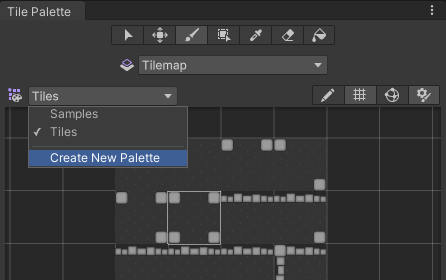
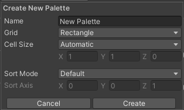
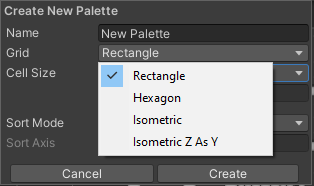
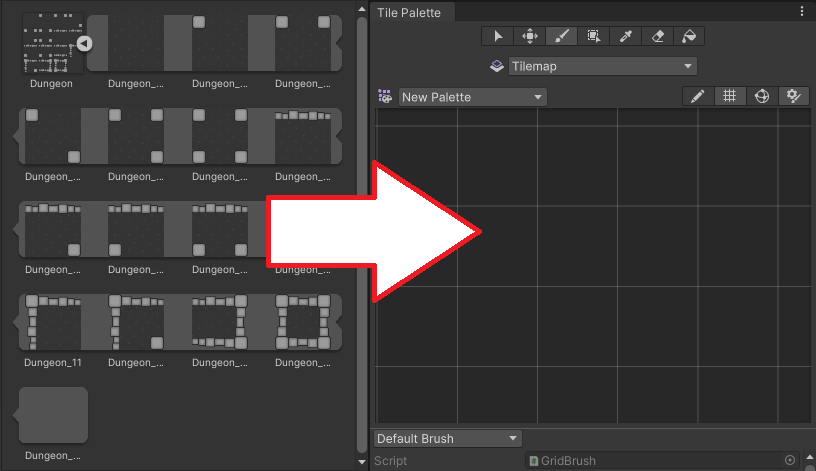
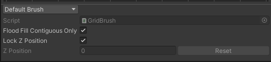
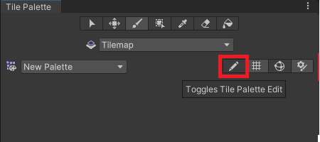
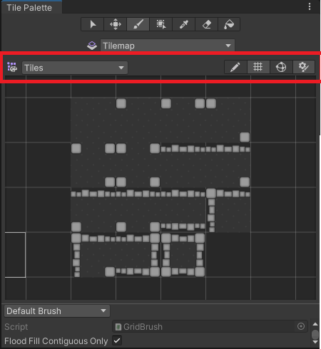
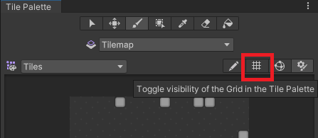
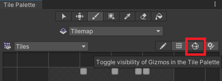

Creating a Tile Palette
将选择的一组瓦片放在瓦片面板上，这样您就可以从面板中选择瓦片以在瓦片地图上进行绘制。要创建一个瓦片面板，转到 Window > 2D > Tile Palette，打开 Tile Palette 窗口。如果看不到此选项，则表示可能未安装 2D Tilemap Editor 包。如果确实如此，请通过 Package Manager 下载 2D Tilemap Editor 包。
默认情况下，Tile Palette 窗口是空的。选择 New Palette 下拉选单以打开项目中可用的瓦片面板列表，或用于创建新面板的选项。选择 Create New Palette 选项创建新的面板。

Select the Create New Palette option from the dropdown menu.
选择创建新瓦片面板的选项后，** Create New Palette** 对话框变为可用。它包含创建新面板时可用的不同属性设置和选项：

The Create New Palette options.

The expanded Grid options.
Create New Palette 属性
| 属性 | 功能 | |
|---|---|---|
| 名称 | 为创建的瓦片面板资源提供一个名称。 | |
| Grid | 选择要将创建的瓦片面板绘制到的网格布局。 | |
| Rectangle | 如果要为默认矩形瓦片地图创建面板，请选择此选项。 | |
| Hexagon | 如果要为六边形瓦片地图 (Hexagonal Tilemap) 创建面板，请选择此选项。 | |
| Isometric | 如果要为等距瓦片地图 (Isometric Tilemap) 创建面板，请选择此选项。请参阅创建用于等距瓦片地图的瓦片面板以了解更多信息。 | |
| Isometric Z as Y | 如果要为 Isometric Z as Y Tilemap 创建面板，请选择此选项。请参阅创建用于等距瓦片地图的瓦片面板以了解更多信息。 | |
| Hexagon Type (only available when the Hexagon Grid type is selected) | 选择要将瓦片面板绘制到的六边形瓦片地图的类型。请参阅有关六边形瓦片地图的文档以了解更多信息。 | |
| Cell Size | 要将瓦片绘制到的单元格的大小。 | |
| Automatic | Cell Size 以 Unity 单位自动设置，并基于用于创建瓦片资源的精灵的大小。如果有多个瓦片，则会调整 Cell Size 以匹配面板左下角的第一个瓦片，使其完全适合单元格。 | |
| Manual | 选择此选项可输入自定义大小值。 | |
| Sort Mode | 确定瓦片面板中的渲染器的透明度排序模式。 | |
| Default | 默认透明度排序模式。此模式由项目的图形设置决定。 | |
| Orthographic | 选择此模式可根据从摄像机到瓦片面板中渲染器的垂直距离对渲染器进行排序。 | |
| Perspective | 选择此模式可根据从摄像机到瓦片面板中渲染器的直接距离对渲染器进行排序。 | |
| Custom Axis Sort | 选择此模式可根据对象沿自定义轴的距离对其进行排序。 | |
| Sort Axis | 如果 Sort Mode 设置为 Custom Axis Sort，则设置排序轴的 XYZ 值。 | |
命名新创建的面板并选择所需的设置，然后选择 Create 按钮。出现提示时，选择要将 Palette Asset 文件保存到的文件夹。新创建的面板会自动加载到 Tile Palette 窗口中。

A blank Tile Palette
Drag and drop Textures or Sprites from the Assets folder onto the Tile Palette, and choose where to save the new Tile Assets when prompted. New Tile Assets are generated in the selected save location, and the Tiles are placed on the grid of the active Tile Palette window.

Drag and drop directly onto the Tile Palette window.
Use the following shortcuts and actions to navigate the Palette window and begin picking Tiles to paint on the Tilemap in the Editor window.
| 快捷方式/操作 | 功能 |
|---|---|
| Click on a Tile | 选择瓦片 |
| Select and drag the mouse over multiple Tiles | 选择多个瓦片 |
| Alt + Left button and drag | 平移 |
| Click the wheel button and drag | 平移 |
| Rotate the wheel button | 放大/缩小 |
Active Brush Inspector
The Active Brush inspector is at the bottom of the Tile Palette window and is minimized by default. To expand it, drag the bottom toolbar upwards. Use inspector to change the current active Brush and its properties.

Brush dropdown menu set to the Default Brush.
Use the Brush dropdown menu to change the active Brush from the Default Brush to other Brushes, such as Scriptable Brushes.
| 属性 | 功能 |
|---|---|
| 脚本 | Displays the currently assigned script Asset that provides a fixed set of APIs for painting on Tilemaps. The default is the GridBrush. Users may use or create their own Scriptable Brushes which become available from the dropdown menu. The Script property updates to reflect the current active Brush. |
| Flood Fill Contiguous Only | Enable this property to have the Flood Fill tool only affect Tiles on a Tilemap which are both the same as the targeted Tile and are contiguous to each other from the targeted position. When disabled, Flood Fill will change all Tiles which are the same as the targeted Tile on a Tilemap regardless of their position. This only affects the Default Brush. |
| Lock Z Position | 启用此属性可更改活动画笔的 z 位置。禁用则防止对活动画笔的当前 z 位置进行任何更改。 |
| Z Position | 仅在启用 Can Change Z Position 时可用。为此画笔输入绘制瓦片时所需的 z 轴值（仅限整数），这也会调整 Z as Y 等距瓦片地图 上瓦片的相对高度。请参阅有关在瓦片面板中调整瓦片高度的文档以了解更多信息。 |
| Reset | Select to reset the z-position value back to zero. |

Expand or contract the inspector with the highlighted toggle.
编辑瓦片面板 (Tile Palette)
The tools for picking and painting with Tiles can also be used to edit the Tile Palette directly, allowing you to move and manipulate the Tiles currently placed on the Tile Palette. Select the Palette you want to edit from the Palette dropdown menu (the default Palette is named ‘New Palette’), then select Edit to unlock the Palette for editing.

The Tile Palette Edit toggle.
Refer to Painting on Tilemaps for the shortcuts and functions of the Palette tools, which can also be used to edit the Palette.
从现有网格预制件创建面板资源
You can convert an existing Prefab to a Palette Asset, so that you can use it in the Tile Palette window. To do this, the Prefab must not already be a Palette Asset, and it must have a Grid component on its topmost GameObject.

The Tile Palette toolbar
To convert a Prefab, drag and drop it onto the Tile Palette toolbar (highlighted in the image above). The Editor automatically converts it to a Palette Asset, and adds a Grid Palette Asset. The new Palette Asset has the same name as its source, and it becomes available in the Palette dropdown menu.
Tile Palette Grid visibility toggle

The Tile Palette Grid toggle.
Switch the visibility of the Grid on the Tile Palette on or off by selecting the toggle highlighted above.
Tile Palette Gizmos visibility toggle
The Tile Palette can display Gizmos over the currently selected Palette Asset, to help you visualize specific criteria. For example, you can add a Gizmo that displays a special icon for Tiles that contain no Sprites.

The Tile Palette Gizmos toggle.
To display the default Unity and the Palette Asset’s Gizmos on the Tile Palette, enable the Gizmos toggle (highlighted above). The Tile Palette immediately displays any component with MonoBehaviour.OnDrawGizmos() in the Palette Asset.
To add your own custom gizmos to a Palette Asset, add a component with DrawGizmo to the Palette Asset:
- Select the Palette Asset in the Project window.
- 以预制件模式打开面板资源。
- 在预制件模式下添加组件。
- 在预制件模式下保存资源。
- 退出预制件模式。
Tile Palette 上下文菜单

The expanded context menu.
Right-click on the Tile Palette toolbar to bring up a contextual menu listing several actions you can use to select and locate objects that the Tile Palette interacts with. The available actions are:
| 操作 | 功能 | |
|---|---|---|
| 选择绘制目标 | Selects the GameObject in the Hierarchy window that is the current target of the Active Tilemap in the Tile Palette. | |
| 选择面板预制件 | Selects the currently active Palette Prefab Asset in the Project window. | |
| 选择瓦片资源 | 在 Project 窗口中选择当前选定的瓦片资源。 | |
| 解锁/锁定面板编辑 | 解锁或锁定瓦片面板的编辑。 | |
| Open Window as | The style of window. | |
| Dockable | Opens the window as a dockable window, which can be docked in the Editor. | |
| Floating | Opens the window as a floating window, which displays on top of the Editor. | |